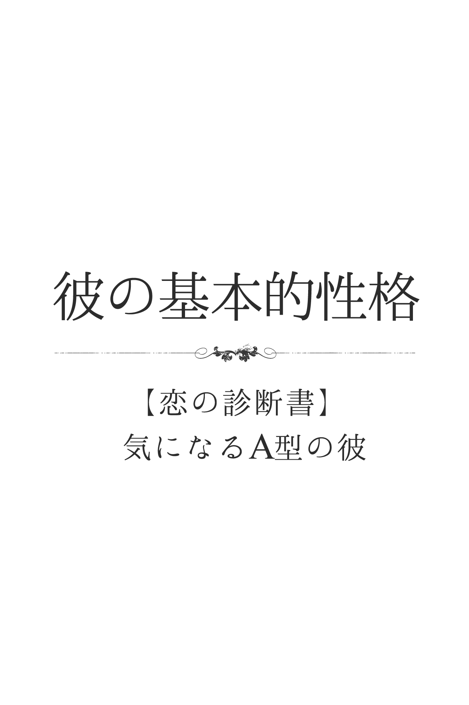
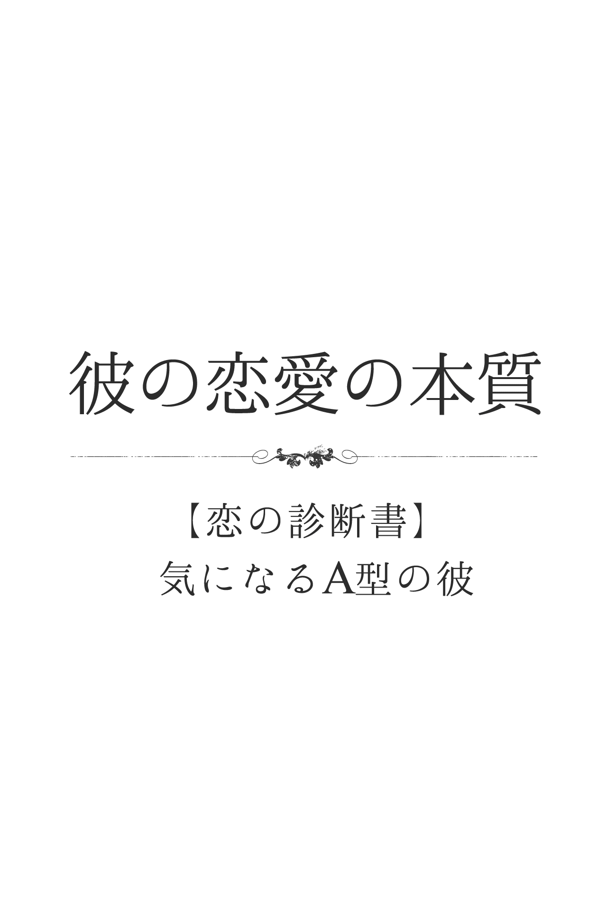
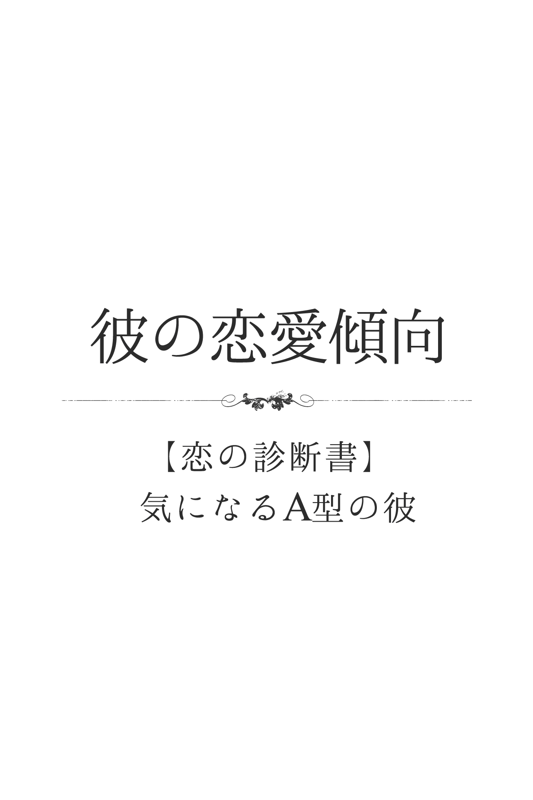
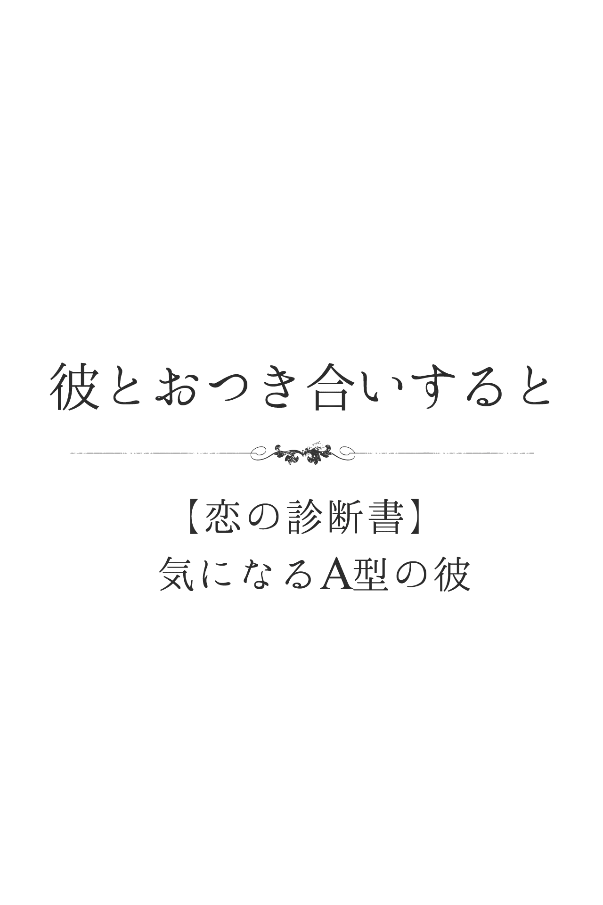
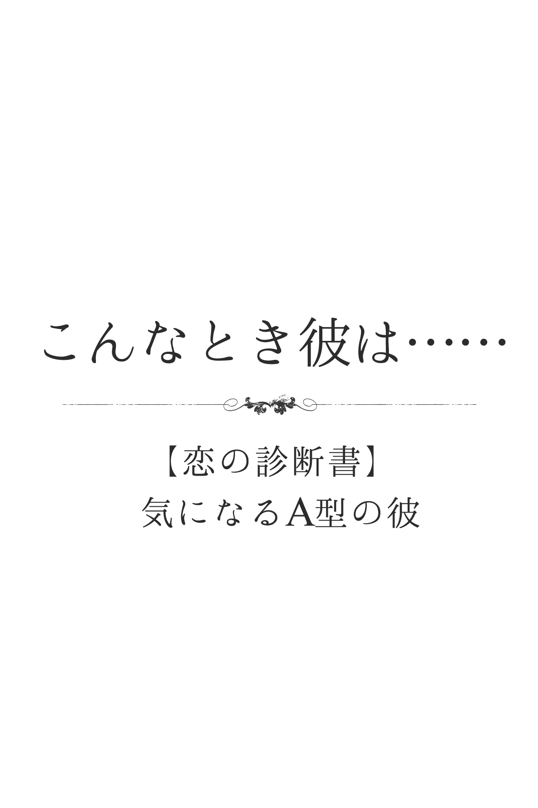
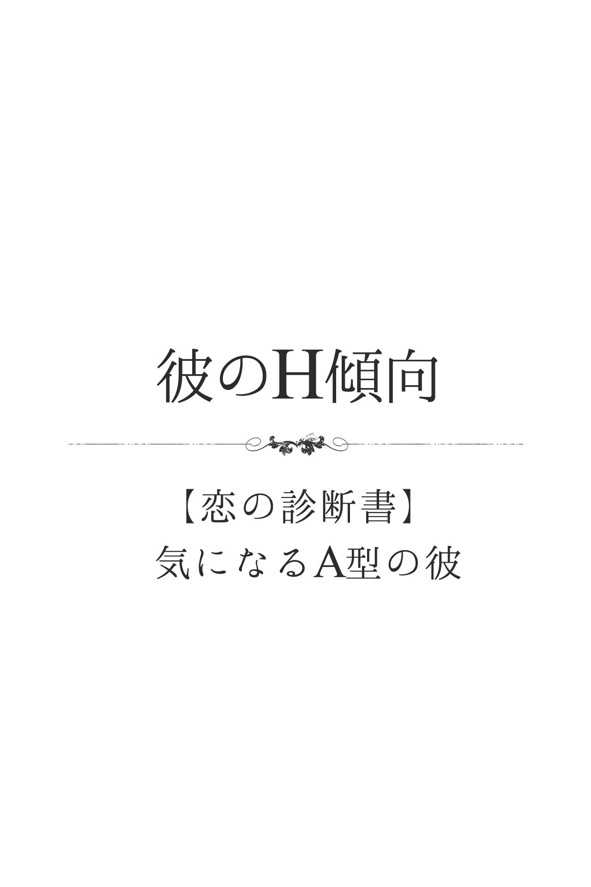
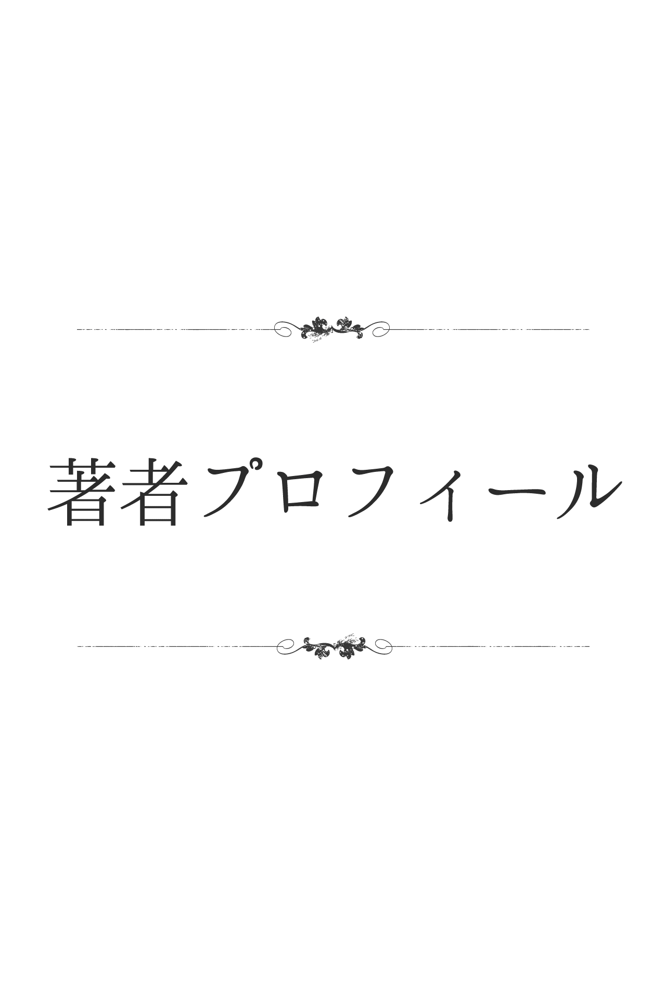
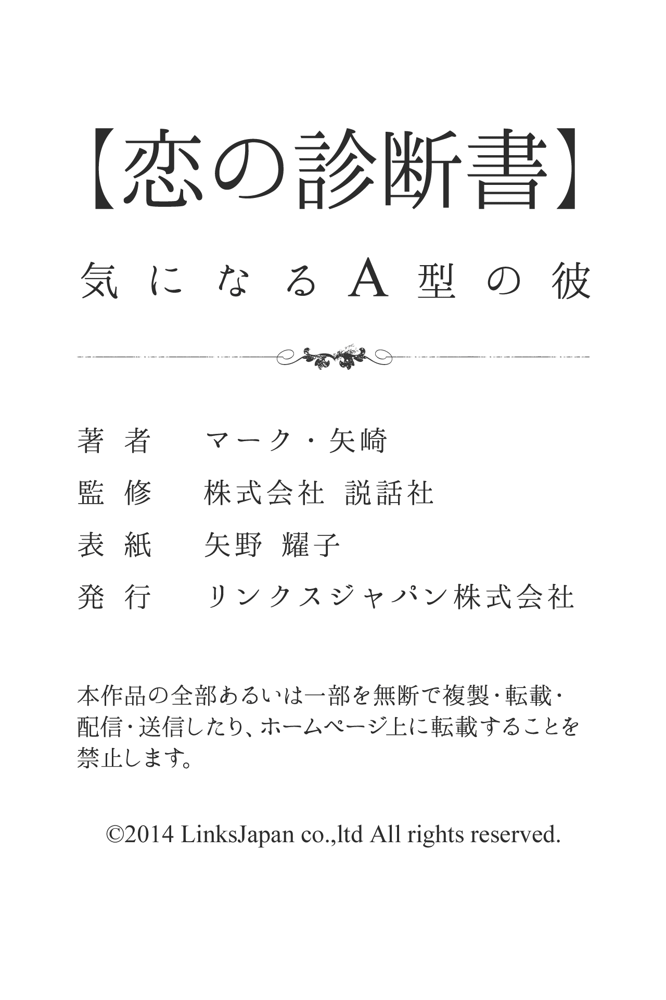

| 【恋の診断書】気になるＡ型の彼 (得トク文庫) | |
| マーク・矢崎 | |
| (2015) | |

1 、はじめに
世の中には、たくさんの占いや診断があります。中でも「血液型診断」は、合コンや飲み会、仕事場や友だち同士の間でも、事あるごとに話題に上るのではないでしょうか。その人の何気ないひと言や行動から「あーＢ型っぽい！」「やっぱり、Ａ型だからねー」なんて口にしたことが、あなた自身、何回かあるのでは？ あなたが好きな男性、あるいは彼氏は何型ですか？ すでに、今の段階で性格と血液型を照らし合わせて、相手のことを何となく判断しているかもしれませんね。恋を上手に進展させていくためには、やはり相手をよく理解し、それに合ったアクションを起こしていくことが大切です。そのひとつの目安やヒントとして「血液型診断」を活用するのは、とても有効的だと思います。この本には、基本的な性格はもちろん、さまざまなシチュエーションを想定した診断を詰め込んでおきました。その中には、きっとあなたが知りたかった項目があるはずです。あなた自身が楽しみながら、そして、ふたりの恋がよりハッピーな展開を迎えられるために、この本が少しでもお役に立てたら幸いです。
2 、彼の基本的性格
彼って、いったいどんな人？
根が真面目で、初対面から誠実な印象を与える彼。何事もコツコツ努力を積み重ね、計画を立ててから実行に移していく慎重派です。基本的に受け身で、自分から積極的にアクションを起こすことは少ないでしょう。ただし、追いつめられると大胆な行動に打って出ることがあり、そんなときは周囲を驚かせます。たとえば、ずっと片想いの相手にアプローチしていなかったのに、強力なライバルが現れると、突然、告白を仕掛ける、なんてことがあるでしょう。
彼は、自意識過剰なタイプ？
彼は、わりと自意識過剰なほうでしょう。表面的に真面目で控えめな印象を与えますが、地道な努力家である分「他人には負けない！」という強い自負をもっています。特に、自分の得意分野に関しては、周りに強いライバル心を抱くほどです。ただ、人に自慢したり、偉そうな態度をすることに嫌悪感をもつＡ型ゆえに、決してそんなそぶりを見せたりしません。天性の器用さをもつＡ型は、何事もソツなくこなせることに、密かな自信をもっているのです。
彼は、第一印象で損するほう？
彼は、第一印象で損することが、ほとんどないでしょう。決して派手なところはなく、いつもファッションは清楚で、きちんとしているＡ型。相手に対して、特別強いインパクトを与えることはありませんが、外見的には良い意味で、当たり障りがありません。おしゃべりも礼儀正しく、言葉づかいもていねいなので、好印象を与えることのほうが多いでしょう。ただ、その場で雰囲気が盛り上がるような場合は、控えめでおとなしいＡ型ゆえに、存在感は薄めかも。
彼は、甘え上手？
根が真面目で誠実な彼は、人にものを頼むことが苦手。本来、自分がすべきことを人に気軽にお願いするなんて、申し訳なくてできないのです。ただし、自分の許容範囲を超える案件を抱えた場合は、口には出さないまでも「実は自分、大変なんです」といった雰囲気を全身でアピールします。もちろん、何とか成し遂げるため一生懸命に努力しますが、心の中では「誰か手を貸してくれないかな」という期待感でいっぱい。でも、決して自分から甘えていくようなことはないでしょう。
彼は、社交性が高いほう？
彼は、決して積極性のあるほうではありませんが、人に対する礼儀を重んじるため、ソツのない社交性を備えています。初対面のときのあいさつや名刺交換などは、きっちりとこなしますし、いい意味での社交辞令も抜かりないでしょう。軽快に話を弾ませたり、その場を大きく盛り上げたりすることはないものの、相手に不快感や不信感を与えるような会話をすることはありません。ただ、率先して人に話しかけていくことがなく、引っ込み思案になりがちなのは否めないかも。
彼は、新しいもの好きなタイプ？
常識的で、何事もきちんとしている彼。基本的には、突飛なことや大きな変化を好まないところがあり、ひとつのことを追究したり、大事に育てたりする傾向があります。でも、意外にそういった自分のカラを破りたいという願望があり、新しい物事には常に興味や関心をもっているのです。たとえば、趣味やファッションなど「自分に合いそうだ」「こんなものを求めていた」というものを見つけると、さっと手を伸ばし、ガラリとイメージチェンジすることがあるでしょう。
彼は、プライドが高いほう？
彼は生真面目で、どちらかと言えば内気なタイプ。でも、ひとりで地道に努力することを怠らない、実力派でもあります。しかも、細かいことによく気がつきますから、必然的に周りと自分を比較しがち。普段から努力し、頑張っている分、人から注意や指摘されることなど、あってはならないと思っています。仮に、できないことや人に劣っている部分を見つけると、相手より優れた自分、あるいは、せめて相手と堂々なレベルまで自分を磨かないと気が済まないでしょう。
彼は、人と自分を比較して落胆しやすいタイプ？
根が真面目で、コツコツ努力を怠らない彼。何事もきちんとしていないと気が済まない性格ゆえに、常に「自分はできているだろうか」「周りよりも劣ってはいないだろうか」と比較することがよくあるでしょう。もともと、手先は器用なほうなのですが、ともすると完ぺきを求める傾向があるために、人と見比べて「自分のほうが上手ではない」と思うとひどく落ち込みます。とはいえ、その落胆こそが、彼の努力と忍耐の源になっているのも事実でしょう。
彼は単純？複雑？
彼の場合、自分の感情や意見を積極的に外に出すタイプではなく、心の中であれこれと検討するタイプです。そのため、複雑度はかなり高いほうだといえるでしょう。あまり親しくないうちは、何を考えているのかわからないと感じられるかもしれません。しかし、根は真面目で誠実な男性なので、親しくなればだんだんと彼なりの考えややり方がわかってくるはずです。そうなれば、以前ほど「複雑な人だなぁ」とは感じなくなるなるでしょう。ただし、もっとハッキリ言ってほしいと思うケースは、相変わらず多いかもしれません。
彼は積極的？それとも不器用な男？
慎重で地道な彼ですから、決して積極的なタイプとはいえないでしょう。特に恋愛のシーンにおいては、相手がどんなタイプかをじっくりと見極めたがり、たとえ好きになっても、その女性の出方を待ってしまうようなところがあります。そういう意味では、間違いなく不器用な男の部類に入るでしょう。そのため、彼がアプローチしてこないからといって、あまり心配する必要はありません。逆に、あなたのほうからどんどんアプローチしていくべきです。彼も、女性からの働きかけを望んでいます。
彼は直球派？変化球派？
内気で消極的な彼は、自分からアプローチを仕掛けてくるタイプではありません。間違っても、ガンガンとストレート勝負してくる可能性はなく、たとえアプローチしてきたとしても、ささやかな変化球といった程度でしょう。一緒にいるときはまったく気がつかなくて、帰宅してから「もしかして、さっきの言葉は愛の告白だったの？」と思えるような、そんな変化球的なアプローチが多いはず。たまにはストレートな愛の言葉が聞きたくなりそうですが、そんなときはあなたから誘導尋問して、無理やり告白させるしかなさそうです。
彼は、ウラオモテがある人？
彼自身はウラオモテがあるとは、夢にも思っていないはずです。もともと嘘をついたり、ごまかしたりすることが嫌いで、誠実でありたいと強く願っているタイプでしょう。ただし、自分の気持ちや意見をストレートに表現することが少なく、心の内に収めてしまうため、彼の本心がどこにあるか、今ひとつわからないことも多いそうです。そのため、状況によってはウラオモテがあるように感じることもあります。でも、親しくなってくれば、自然と気持ちを察することができるようになり、彼のほうも徐々に遠慮しなくなってくるはず。
彼に秘められた性格的な長所とウィークポイント
彼は真面目でやさしく、基本的に受け身タイプです。自分から積極的に人生を切り開いてくことはしないでしょう。とはいえ、追いつめられると、大胆な行動に打って出ることはあります。たとえば、ずっと片想いしていて、なかなかアプローチできないでいる相手がいて、突然、強力なライバルが現れた場合、清水の舞台から飛び降りるような気持ちで、猛アプローチを仕掛けることがあるでしょう。そんなときの彼の真摯さと必死さは賞賛に値します。これは大きな長所ということができるでしょう。ただし、一度習慣化したことはなかなか変えられない一面もあります。この点はウィークポイントでしょう。
彼の喜怒哀楽
彼は、喜怒哀楽をあまり出さないほうです。自分の感情や思っていることをあからさまに出すのは、みっともないことであり、恥ずかしいことだと思っているからです。羞恥心の強いタイプでしょう。そのため、うれしいときや楽しいときも、ニコニコしたり目が笑っている程度で、声を立てたりすることはめったになさそう。それでも彼は、十分にうれしいのでしょう。特に、あとからメールで感想をつづってきたり、後日「あのときは楽しかったね」なんてくり返すのは、彼なりの喜びやうれしさをめいっぱい表す方法なのです。
ジキルとハイド、彼の二面性は？
彼はわりと気が小さく、思っていてもストレートに言えなかったり、行動したくても実行に移せないことが多いタイプです。したがって、実際の言動と、心の中の願望との間に、かなりの差があります。その意味では、二面性があるといえるでしょう。ただし、相手への親しみが増すにつれて、言いたいこともやりたいことも、少しずつできるようになっていくはず。そして、関係が深まるにつれて「へぇ、彼にはこんな一面があったんだ」と、新鮮な驚きを与えることになるでしょう。
彼が傷つくひと言は？
彼が傷つくひと言は「結婚に向かない人」だと言われることでしょう。というのも、彼は誠実でやさしい人柄の持ち主で、誰からも好かれるタイプだから。どちらかというと、保守的な考え方をもち、結婚への憧れも強く、結婚して幸せになるという夢を抱いています。自分でも結婚に向いている、と信じているので「結婚に向かない人だ」と言われたら、間違いなく彼は傷つくでしょう。そして、一体自分のどこが問題なのかと、深く悩んでしまいそう。特に、結婚を考えていた相手から言われた場合のダメージは想像以上の痛手になります。
彼が喜ぶほめ言葉は？
彼が喜ぶほめ言葉があるとすれば「隠れた才能や可能性がありそう」といった言葉です。彼は真面目で几帳面なタイプ。コツコツと努力することは得意ですが、自由な発想力や強靭な意志力には、やや欠けるかもしれません。とはいえ、夢見がちなところがあって、いつも「本当の自分はこんなものじゃないはず」と思っています。そのため「隠れた才能や可能性がありそうだ」と言われることほど、うれしいほめ言葉はないでしょう。自分の本当の才能を見抜いてもらったのだと、感激するはずです。
３ 、彼の恋愛の本質
彼の恋愛思考回路
憧れが、恋のベースにある彼。本命に理想を重ね合わせて、特別視しやすいでしょう。このため、愛する人のパーフェクトな美しさや清らかさを汚すまいと、自分の気持ちや欲望をセーブしてつき合い、ひとり我慢大会になることもしばしば。また、運良く距離が近づいた場合も、実際の彼女と、勝手にふくらませていた想像や期待との差にショックを受けて、調整に手間取ることも多いようです。保守的な恋愛観をもち、時代遅れとわかっていても、一途さや純愛を大事にします。
彼の愛のカタチ
じっくりと時間をかけて愛を育てていきたいというのが、彼の望む恋愛です。したがって、気になる女性が現れたからといって、決して恋を急ぐことはないでしょう。彼女がどんなタイプでどんな男性が好みか、どんな趣味をもち、どんなことを考えているのかなど、じっくりと調査してから、やっと本気で心を傾けていきます。基本的に、自分から積極的にアプローチしていくほうではなく、自然と会話できるチャンスを待つタイプですが、ライバルが多ければ大胆なアプローチを仕掛けることもあります。恋仲になってからは、決して相手を裏切らず、誠実な愛を捧げるでしょう。
彼が、恋人を選ぶときの３大条件
彼が恋人を選ぶときの条件の第一は、可愛い女性であること。見かけが可愛ければ、もちろん最高ですが、内面が可愛くて誰からも愛されるような女性を、ぜひ恋人にしたいと思っているでしょう。
第二の条件としては、話を聞いてくれる女性を求めます。わりと控えめな彼だけに、気軽に話せないことが多いのです。そんな彼だからこそ、恋人にはじっくり話を聞いてもらいたいのでしょう。
第三の条件は、信頼感があること。どんなことがあっても裏切らず、自分だけを見つめてくれる、そんな女性を恋人にしたいと思っているのです。
彼は、ロマンチスト？
彼は、決してロマンチックな部分がないわけではありませんが、基本的には超現実派。淡い夢や場面を思い描くことはあるけれど「では実際に何をどうすればいいか」と、すぐに頭を切り替えてしまいます。また「あれをこうすればロマンチックな雰囲気を演出できる」と考えたり、デートや場所の雰囲気よりも、プレゼントの内容や価値など、物を重視したりしがちでしょう。とはいえ、誰よりも人と人との絆を信じ、大切にしたいと願っているのも彼なのです。
彼は、女性に本音を言わないほう？
彼は、異性に本音を語るタイプです。普段はおとなしく、口数の少ない印象はありますが、いざ語り合う場面におかれるとズバッと切り込んでくるＡ型。もちろん、異性に好かれたい気持ちから愛想良く振る舞うこともありますが、結局は自分を偽ることに疲れてしまいます。特に好きな相手に対しては「本当の自分」を見せたい気持ちが強くなるので、上辺だけの話などしなくなるでしょう。同時に、相手の反応をしっかりと観察して、接し方をシビアに考えるようです。
彼は、女友だちを「オンナ」として意識している？
Ａ型男子は女友だちを「オンナ」というよりは、あくまでも「女性の友人」として意識しているでしょう。礼儀正しく律義なＡ型は、たとえ仲のいい女友だちであっても、誠実さをもって接します。親しみをもって、相手をあだ名で呼ぶことはあっても、むやみに呼び捨てにしたり、見下した言動をしたりすることはないはずです。ただし、女友だちの中に好みのタイプや外見的に魅力的な相手がいる場合は、恋人候補や性の対象としてチェックすることはあるでしょう。
彼は、好きな相手に冷たくしてしまうタイプ？
人に対する気づかいが上手な彼は、常に相手の気持ちを考えながら行動します。もちろん、自分がどんな発言や態度をとれば、相手がさびしがったり、悲しがったりするかということを承知しているので、めったなことでは冷たい対応をすることはありません。特にＡ型は、以前誰かに冷たくされたことをずっと覚えていて、同じことを自分がしないように心がけています。好きな人に冷たくするときは、ケンカをしているときや別れを考えているときくらいでしょう。
彼は、女性をソノ気にさせるのがうまい？
彼はやさしさにあふれ、異性への心づかいを忘れないタイプ。相手をその気にさせるために、いろいろと考え努力するでしょう。あらかじめ情報を集め、抜かりなく計画を練って雰囲気づくりをします。しかも、ムード派なので、ロマンチックな演出も欠かさないはず。上手に言葉を選びながら、相手の気持ちを盛り上げていくでしょう。ただ、相手からアプローチされるのを求めるＡ型ゆえに、積極的で情熱的かというと、その点では物足りなさを感じさせるかも。
彼は、恋に事欠かないタイプ？
恋愛に対してとても慎重で、相手の気持ちや状況を常に考える彼。気になる相手が、自分に好意を抱いているのかを確かめるまでは、積極的なアプローチに出ることはありません。そのため、片想いの期間が長くなりがちで、当然、恋人がいない時期も、それに比例します。ただし、交際が始まると長続きしやすいのが彼の特徴です。それは、常に恋人を思いやり、じっくりと信頼関係を築いていこうとする、真面目で誠実な愛情をもっているからでしょう。
彼は、女性の頼み事を断れないタイプ？
細かいことによく気がつき穏やかでやさしい彼は、女性の頼み事を断ることができません。女性は、か弱い存在であり、男性が守るべきだと思っているので、たとえ好きではない相手の頼み事でも、きちんと対応します。実際、女性に頼られることはＡ型男子の喜びであり、自信につながってもいるでしょう。ただ、日頃から要領のいいタイプや、ずる賢い女性はチェックしていますから、そういった相手に対してだけは毅然とした態度をとるようです。
彼は、何とも思っていない相手から告白されることが多いタイプ？
誰に対しても誠実で、周囲への気づかいを忘れない彼。そのため、本人は当たり前のようにしている親切を、自分に向けられた好意だと受け止めてしまう人はいるでしょう。でも、彼は人の感情に敏感でもあるので、何とも思っていない相手が妙な動きをし始めたとたん、さり気なく壁をつくったり距離をとったりするため、それ以上エスカレートすることはほとんどありません。ただし、時にはその控えめで清楚な魅力にひと目惚れして、一気に迫ってくる女性もいるようです。
彼が気になる相手にする態度
内気な彼は、気になる相手に対して、これといって目立った態度をとることはありません。むしろ、普段とあまり変わらないというところが、彼らしい態度。積極的に言葉をかけることも、じっと見つめることもないので、周囲からはほとんど気づかれないでしょう。ただし、気になる相手から話しかけられたりすると、一瞬顔を赤らめたり、ドギマギしたりすることはあります。また、本気で好きな相手の場合は、緊張して指先が震えてしまうことも......。
彼が嫌いな相手に接する態度
誰に対しても誠実で、礼儀正しさを忘れない彼。たとえ嫌いな相手でも、他の人と変わらない態度で接するよう心がけています。相手の話をきちんと聞くのはもちろん、いい加減な受け答えをすることは、まずありません。ただし、それまでの経緯で、相手が信用のおけない人だったり、生理的に受けつけないタイプだとわかったりした場合は、できるだけ早く話を打ち切るように応対します。話が終わり、相手のそばを離れたとたん、笑顔はさっと消え、真顔に戻る彼でしょう。
彼にとって恋人と結婚相手は別？
彼にとって、恋人と結婚相手は、同じものだといえます。基本的に、好きな人ができても、なかなかアプローチできず、相手からの働きかけを待ってしまうタイプ。交際がスタートしてからも、慎重に時間をかけて愛を育てていきたいと思っているでしょう。そのため、何年も交際が続く相手であれば、彼とよく気が合って、趣味や価値観も似ているタイプといえます。そんな相手となら、結婚しても大丈夫だという気持ちが自然にわいてくるでしょう。そして、数年の交際を実らせて、ウエディングベルを鳴らすということになるのです。
彼の｢好き避け｣と｢嫌い避け｣は、こんなふうに違う
彼は慎重なタイプで、相手の気持ちがよくわからないうちは、なかなかアプローチをしません。仮に好きな女性から声をかけられても、どう対応していいかわからず、気のない返事をしがちです。しかも、好きであればあるほど、固まってしまい、無反応になってしまうでしょう。まさに｢好き避け」する典型的なタイプといえます。これに対して「嫌い避け」する場合、意外にも笑顔で対応してしまうでしょう。周囲から悪く思われたくないという気持ちが、作り笑顔をさせてしまうようです。とはいえ、嫌いな女性と楽しそうに話し込んだりすることはなく、すぐに真顔に戻ってしまいます。
彼には、不倫願望はある？
彼に不倫願望があるかといえば、答えはNOです。誠実でやさしく、周囲への気づかいにあふれる彼ですから、傷つく人が出るような恋愛は絶対にしたくないと思っています。自分や相手のパートナーを裏切ることになり、もちろん、自分たちも背信の恋をしていることで苦しみ悩むに違いないから。結局、誰も幸せになれないと、彼は感じているでしょう。とはいえ、願望がないからといって、不倫の恋に落ちないとは限りません。もし、忘れられない女性と再会してしまったら、不倫だと理性ではわかっていても、自分をと止められない可能性は十分にあるでしょう。
彼の同性愛思考は？
彼に同性愛の嗜好があるかどうかと問うなら、ほとんどないといっていいでしょう。というのは、彼はごくオーソドックスなものの考え方をするタイプで、同性との恋愛など、思いもよらないものだから。したがって、最初から恋愛対象は、イコール女性だと信じて疑いません。ただし、彼のそのオーソドックスな考え方を打ち破ってしまうようなことが起きることは十分にありえるでしょう。自分が心から信頼していた同性の友人から愛を打ち明けられたなら、悩みに悩んでしまうに違いありません。
4 、彼の恋愛傾向
片想いをしているときの彼は？
自分では、やりすぎと感じるくらいアピールしているつもりなのが、彼。でも、客観的に見ると、好意は伝わるものの、友情や仲間意識の領域から出ません。このため、良き理解者として、片想いの相手から恋愛相談さえ受けたりしそう。よくある「いい人止まり」で終わってしまうのは「関係を深めるのは気持ちを確認したあと」という思い込みがあるせいでしょう。男性としての押しが足らず、目の前でライバルにさらわれることもしばしば。
彼の気持ちと言葉と行動の一致度
彼は、自分の気持ちを声高にアピールすることもなければ、ストレートに言葉や行動に表すこともないタイプ。そのため、周りからすると、気持ちが理解しづらいし、言葉や態度もあいまいに見えてしまい、一致しているのかいないのかも、さっぱりわからないでしょう。彼自身、有言実行よりは不言実行のほうがステキだ、と信じ込んでいる傾向もあります。そのため、そぶりさえ見せなかったのに、突然、愛の告白をしたりしがち。周囲にはわからなくても、彼の内面では、気持ちと言葉と行動はすべて一致しているのでしょう。
彼は、告白したいほう？されたいほう？
彼はやさしく控えめな人柄の持ち主。言われたことは、きちんとやり遂げる強い責任感をもっています。反面、自分から積極的にチャレンジしていこうと意欲には欠けているでしょう。恋愛シーンにおいても、基本的には受け身で、好きな人ができても、相手の出方をじっと待ってしまうタイプ。そのため、愛の告白に関しては、相手から告げてほしいと思っています。ただ、あまりにも相手の様子をうかがいすぎ、見ているだけで、なかなか想いが通じないケースも少なくありません。
彼が恋に落ちる瞬間
彼は温厚な性格で、進んで自己主張するタイプではありません。それだけに、何も言わないのに「この女性は自分の気持ちや立場をわかってくれている」と感じたとき、恋に落ちる可能性が高いでしょう。たとえば、仲間大勢で遊びにいくことになり、彼がいろいろ心配りしたり準備をしたりしたのに、他の男性がその手柄をもっていってしまった状況で｢本当は、あなたがすべてお膳立てしたのでしょう？ お疲れ様」なんて、やさしく言われたら、それだけで「この子は自分をよくわかっている」と大感激して、恋してしまうはずです。
彼の恥ずかしがりや度
彼は、とても生真面目で内気なタイプ。その恥ずかしがりや度は半端ではなく、非常に高いでしょう。好きな女性を前にしただけで、目を伏せたり頬を赤らめたり、場合によってはモジモジしたりと、幼い子どもみたいなところがあります。そんな彼ですから、自分からアプローチするのは至難のワザでしょう。ひとり部屋で愛の告白のシミュレーションして練習しても、なかなか実行には移せないようです。実際には、チャンスが訪れているのに何も言えず、ひたすら相手からの告白を待っているだけ、ということになりがちでしょう。
素直に言えない彼の｢実はかまってほしい｣サイン
彼は優等生タイプで自分を抑えることがうまく、自分から「かまってほしい」とは、なかなか言えないでしょう。何となくさびしそうな表情をしていたり、口数が少なくなったというときは、すでに｢実はかまってほしい｣サインを出しているのです。たとえば、友人と皆で騒いでいるとき、ポツンとしていたら｢実はかまってほしい｣気持ちでいっぱいでしょう。また、彼女が友だちと旅行に行くといった場合でも、悲しそうな顔をしそう。そんなときは「おみやげは何がいい？」と気づかって聞いてあげましょう。もちろん、旅先から毎日連絡を入れることも忘れないで。
好きな娘の前で格好つける彼の典型的行動
彼は穏やかで、真面目な人柄の持ち主。格好つけるといっても、できるだけさり気なく自分を演出したいと思っているでしょう。せいぜい、シャツのエリにこだわって、おしゃれに変身したつもりでいたりするぐらいのようです。好きな女性の前でも、無理に自分を変えることはありません。ただし、何気なく気をつかったりといったフェミニストぶりを発揮することはあるでしょう。普段からやさしい人ですが、好きな女性には特別親切になるはず。それが彼なりの格好づけ。特に、足を組むしぐさは増えそうです。
｢好きな相手｣と｢何とも思ってない相手｣との彼の電話傾向
心やさしく、周囲への気づかいにあふれている彼。たとえ、何とも思っていない相手から電話がかかってきたとしても、やさしく聞いてあげるでしょう。好きな女性からの電話でも、一見同じような対応をとるので、好意があるかどうか、わかりにくいかもしれません。ただし、何とも思っていない相手であれば、聞き役に徹するだけで、話を終わらせてしまうはず。一方、好きな相手であれば、自分からも話を振ったりして聞いてもらおうとします。「ところで、僕もこんなことがあったんだ」といったリアクションがあるでしょう。また、用事がない限り、何とも思っていない女性に、自分から電話することはありません。好きな女性にしか、自分からは電話しないタイプです。
｢好きな相手｣と｢何とも思ってない相手｣との彼のメール傾向
彼は、誠実な人柄の持ち主です。したがって、もらったメールに関しては、きちんと返事をするでしょう。返さないのは失礼だと考えます。とはいえ、好きでも何でもない相手へのメールは勘違いされないように気をつかうので、自然に簡略なものになり、素っ気ない印象を与えるはず。用件のみになることが多いでしょう。好きな相手へのメールなら、長い文面になり、絵文字やデコメを使って、砕けた自分をアピールするようです。ただ、ちょっと無理してるなと感じられるかも。また、好きな女性には用事がなくても｢元気？」などの様子うかがいのメールを送ることがあるでしょう。
彼は、遠距離恋愛をクリアできる？
彼は穏やかな人柄の持ち主で、時間をかけて愛を築いていきたがるタイプ。たまにしか会えない状況でも、じっと耐えてくれるでしょう。そのため基本的には、遠距離恋愛でも、きちんと愛を貫いていくことができる男性です。ただそのためには、女性のほうから、いろいろと働きかけることがポイントになります。彼が文句を言わないからといって、マメに連絡するのを怠ったりデートの約束を軽々しくキャンセルしてしまうようでは、彼の愛を失うのも時間の問題。遠距離という試練がふたりの愛を強くすると、彼は考えているのです。
彼が好きになる女性のタイプ
彼が好きになるのは、おっとりしていて、やさしそうなタイプの女性です。誰に対しても親切に接することができ、素直で可愛い笑顔の持ち主なら、彼はゾッコンとなってしまうでしょう。というのも、彼は控えめで、ちょっと真面目すぎるくらいの人だから。したがって、可愛い女性から笑顔を向けられたり、やさしい心づかいを示されたりすると、それだけでポーッとなってしまうに違いありません。見かけもキュートで、女らしいムードの持ち主であれば、コロッと惚れてしまいそう。
彼が弱いアプローチ
彼が弱いアプローチは、明るく人懐こいムードあふれるアプローチです。たとえば、彼を見つけると、うれしそうな顔をしてかけ寄ってきてあいさつしてくれたり、楽しい話題を提供して何かと話しかけてもらったりすると、彼は胸が高鳴ってしまうでしょう。というのは、彼は真面目で心やさしい人で、自分から積極的にいけないタイプだから。しかも、周囲から慕われたり、好感をもたれたいという願望の持ち主でもあります。したがって、女性のほうから明るく親しげにアプローチしてもらえると、それだけで相手の存在を強く意識してしまいます。
彼の気持ちをガッチリつかむひと言
彼は、真面目で責任感の強い男性です。恋愛に対しても堅実な考え方をもっていて、時間をかけてお互いを理解し合い、愛を深め合っていきたいと思っているタイプ。したがって、彼のハートにビビッと響くようなセリフは「あなたは私のことを、誰よりもわかってくれると思うの」といったひと言です。「わかってくれる人」と言われただけで、彼は自分がとても頼りがいのある男性だと認められたと感じます。そして、そう言ってくれる彼女を「守ってあげたい」という気持ちになるのです。
彼が気づかない、恋の駆け引きとは？
彼にちっとも伝わらない恋のかけ引きは、他の男性をわざとほめてヤキモチを焼かせる、といったものでしょう。というのは、彼はとても真面目で、温厚な人柄の持ち主だから。そのため「ああ、彼女はその男が好きなんだろう」と、素直に思い込んでしまいます。むしろ「うまくいくといいね」なんて、彼から励まされてしまう可能性も。またその後、実は自分に気があるとわかったとしても、良い効果は得られません。なぜなら、他の男性を当て馬につかって恋を射止めようという考え方こそ、彼が一番嫌うものだからです。
彼の恋愛経験は多い？少ない？
彼の恋愛経験は、それほど多くはないでしょう。というのは、彼は運命の人に出会いたいという気持ちが強く、気になる相手が現れても、本当に運命の相手かどうか確信がもてないうちは、恋に飛び込んでいくことができないから。そのため、どうしても恋愛経験は少なくなってしまいがち。とはいえ、人一倍ロマンチストでもありますから、本当に「この人だ」と感じられる女性に出会えたなら、それまでの控えめな態度や行動から想像もつかないほど、大胆な彼に変身してしまうでしょう。
彼の過去の恋愛における特徴とは？
彼が、過去に経験してきた恋愛の特徴は「じっと待つだけの恋」です。彼は控えめで、物静かなタイプ。自分から積極的に行動することは少ないでしょう。まして、恋愛となれば、慎重になりすぎて何もできなかったことのほうが多いはず。結局「ずっと待つだけの恋」になってしまい、好きな人にアプローチひとつできなかったことでしょう。運良く、相手も彼に気があって恋仲になれたとしても、うまくコミュニケーションがとれなかったり、素直に愛情をアピールできなかったりして、恋の進展がうまくいかないことも少なくないのです。
5 、彼とおつき合いすると
彼は、恋人に尽くすタイプ？
彼は、恋人に対しても他の異性にも接し方に、あまり変化がないのが特徴です。真面目で冷静につき合うことをモットーにしていますが、一線を越えると急に甘えん坊になったり、なれなれしくなったりすることも。ただし、ふたりの他に誰かがいるところでは、決してそんな姿は見せません。とはいえ、常に恋人のことを観察していますから、日頃から気づかいを忘れることはないでしょう。いざというときには、周囲など関係なく恋人のことを最優先するＡ型です。
つき合い始めたときの彼は？
思いやりがあり、やさしい恋人になる彼でしょう。デートは、あくまでも恋人が主体。リクエストに応じて、行きたいときに行きたい場所にアレンジしてくれるはずです。お任せしても、過去のデータを参考に、パートナーを喜ばせるプランを立てます。ムードづくりという意味では、かなりベタ。キャンドルライトや夜景など、使い古されたセッティングで女性が喜ぶ、と思い込んでいるようです。下心を精いっぱい隠しているつもりなのが、可愛い限り。
彼は、どんな彼氏になる？
彼は、交際が始まっても、あまり変化がないでしょう。基本的に真面目で冷静につき合っていくことになります。ただし、一線を越えると、急に甘えん坊になったり、なれなれしくなったりするところはあるようです。しかし、ふたりの他に誰かがいるところでは、決してそんな姿を見せません。そのため、周囲からは「彼って、交際しているのに、あまりハッピーに見えないね」と言われてしまうことがあるかも。彼の本当の姿を知っているのは、恋人である彼女だけということになりそう。
彼が好きな交際の形は？
彼は控えめで、穏やかなロマンチスト。恋愛においては、愛する人と心から理解し合い、お互いに思いやりを寄せ合って交際したいと望んでいるでしょう。デートは基本的に、おしゃれでロマンチックなムードあふれるものにしたいと考えています。そのため、いくら愛する人と一緒でも、ファミレスやラーメン屋さんで手軽に済ませるような食事は極力避ける傾向が。カジュアルにイタリアンを楽しんだり、和食でヘルシーに決めたりすることはあっても、あくまでもムードは大事ですし、できるだけ静かなお店でいろいろと語り合いたいと思っているでしょう。
彼が好きなデートとは？
彼は、真面目な人柄の持ち主で、自分の気持ちや愛情を素直に伝えるのが苦手なタイプ。したがって、彼が好むデートは、相手がリードしてくれるようなデートが大好き。たとえば、デートの約束は彼から言い出したとしても、どこに行くか、何をするかは、彼女にお任せしたいと思っています。彼女が行きたいお店で食事をしたり、映画館でも遊園地でも美術館でも、彼女が行きたいと言うスポットに一緒に出かけるのが、彼が好むデートコースなのです。
交際に関する彼の長所と短所
彼と交際していくうえで、最大の長所は約束したことをきちんと守ってくれることです。デートのとき、約束の時間に遅れてくることは、彼に限っては絶対にないでしょう。また、バースデイにお願いしたものが、どんなに高価であっても、ちゃんとプレゼントしてくれるはず。逆に、自信や確信がなければ、自分から明確な愛の言葉を絶対に言い出しません。なかなかプロポーズをしてくれないのも、本気で愛していないからというより、経済的なこととか、ふたりで暮らすだけの覚悟がまだできてないから。愛情の示し方が消極的だという点は、やはりマイナスポイントかもしれません。
彼は、恋人を束縛するタイプ？
やさしく誠実で、思いやりにあふれている彼。常に、好きな人に対する気配りを忘れません。そのため、表面的には恋人を尊重し、束縛するような言動やそぶりを見せることは、ほとんどないでしょう。ただし内面は、相手を束縛したい気持ちでいっぱいです。ふたりの絆や信頼を第一に考えるＡ型ゆえに、その分「恋人は自分だけのもの」という想いは、かなり強め。頭では束縛してはいけない、とわかっているからこそ、いつも心の中で嫉妬心と葛藤しています。
彼は、束縛されるのが嫌いなタイプ？
彼は相手を尊重する分、自分もそうしてほしいと考えています。本来は、相手を自分のものとして束縛したい気持ちはありますが、それをグッと抑えてお互いを尊重し合える関係を理想としているのです。何も興味や関心を示されず、放っておかれるのも嫌だけれど「どこに行っていたの？」「これはダメ！」と、強く束縛されるのも嫌、というのが正直なところでしょう。あくまでも、自然体で向き合いながら、支え合っていきたいと考えています。
彼の浮気思考回路
浮気は背信行為と考えるのが、彼。恋人や妻との関係がどんなに冷めていても、ストイックに自分の欲望を封印しようとします。ただ、抑えれば抑えるほど、衝動が強くなるのは、人間の性（さが）というものでしょう。お茶、食事、キスと「これくらいまではいいのではないか？」のジリジリと境界線が下がってきて、やがて一線を越えてしまうことに。この場合、自分は我慢したと自己正当化し、浮気は本気に変わります。
彼は浮気性？
彼は、浮気性とはいえません。根が真面目で誠実ですので、恋人ができた以上「絶対に相手を裏切ってはいけない」という強い倫理観をもっているのです。ただし、交際中に、恋人がＡ型の注ぐ愛情をないがしろにしたり、他の異性や友人を優先してばかりいるようなときは話が別。もし、自分の想いが報われないと感じたり、心から信じていたい相手に裏切られて大きなショックを受けたりした場合は、さすがのＡ型も自分を見失って浮気に走ることがあるでしょう。
彼は、二股をかけることができる？
彼はひとりだけの人に愛を捧げたいと願う、純愛ロマンチスト。好きな人ができれば、その人以外は目に入らないでしょう。たとえ、もっとステキな女性からアプローチされたとしても微動だにせず、心を動かすことはほとんどありません。そのため、基本的には二股の恋愛など、彼には考えられないこと。ただし、もし恋が終わりを迎えようとしているときに、新たな出会いが訪れたとしたら、ほんの一瞬の期間、ふたりの女性と交際するケースはありそう。もっとも、生真面目な彼のことですから、すぐに交際中の相手には別れを告げるはずです。
彼は、恋人に隠し事が多いタイプ？
彼は、わりと隠し事が多いでしょう。ただ、それは隠し事というより「言い出せなかったこと」といったほうが正しいかもしれません。自分の気持ちや意見をストレートに表現することが苦手なため、つい心の内に収めてしまうのが、その原因です。そのため、恋人からすると、本心がどこにあるか今ひとつハッキリしないことがあるでしょう。基本的には、後ろめたいような隠し事はなく、相手から聞かれればむしろ何でも話してしまうのほうが多いようです。
彼は、彼女がいても、平気で友人と食事に行っちゃう？
根が真面目で律義な彼は、何といっても彼女が一番の存在。その彼女を差しおいて、他の人と食事に出かけるなんて、裏切りに等しい行為であり、後ろめたい気持ちでいっぱいになってしまうでしょう。ただし、相手が大切な相手だったり、尊敬している人だったりする場合は別。そんなときは、きちんと彼女に事情を説明して、スッキリした気分で食事に出かけます。また、彼女とうまくいっていない状況のときは、救いを求めるかのように他の人と出かけることも。
彼は彼女がいても、他の女性に興味津々なタイプ？
恋愛に関してとても誠実で、心のつながりを求める彼。そもそも、彼女を手に入れるまでじっくり時間をかけ、やっとの思いで恋成就まで漕ぎつくことが多いため、相手に対する愛情はちょっとやそっとでは揺るぎません。もちろん、相手が魅力的な女性が現れれば関心を寄せることはあるでしょうが、それはあくまでも表面的なもの。そんな浮ついた気持ちになること自体「彼女への裏切り」であり、後ろめたくて自己嫌悪に陥ってしまうほど、彼女一筋のＡ型男子でしょう。
彼は彼女いても、誘われると断れないタイプ？
ひとりの女性だけに愛を捧げたいと思っている純愛主義者の彼。大好きな彼女がいれば、誘いをシャットアウトするのは当然なのです。恋人がいるのに他の女性とお茶や食事をすること自体、彼にとっては裏切り行為に匹敵します。ただし、今の彼女が自分にとって本当にふさわしいかどうか悩んでいる状況にある場合、とりあえず誘いに応じることはあるでしょう。もしも、相手がステキな人なら、優柔不断な面が出て、同時進行でつき合ってしまう可能性も。
彼は、釣った魚にもちゃんとエサをあげるタイプ？
恋愛を真面目に考え、恋人との絆を大切にしたいと思っている彼。特に彼の場合は、根底に交際イコール結婚という考えをもっていますから、釣った魚にエサをやらないということは、まずありえません。むしろ、おつき合いを始めたことを境にして、どんどん深い愛情を注いでいくでしょう。決して派手で華やかではありませんし、どちらかと言えば不器用な愛情表現の彼ですが、常に相手のことを第一に考え、お互いの理解と信頼を築いていこうと努力します。
彼を理解するには、どれくらいの年月がかかる？
彼自身、じっくりと物事に取り組みたがるタイプ。特に、恋愛に関しては、時間をかけて少しずつ愛を深めていきたいと思っています。しかも、本来、恥ずかしがりやの彼ですから、自分をさらけ出すまでに、かなりの時間がかかってしまう傾向が。そのため、彼を理解するのはそれほど簡単にはいかないでしょう。おそらく彼としては、３年くらい交際して、お互いを理解し合えればいい、というくらいの気持ちでいるはずです。たとえ毎日のように顔を合わせたとしても、早くて１年はかかると思っていいでしょう。
6 、こんなとき彼は......
同棲生活が長くなったときの彼は......。
「いい加減、責任をとらないといけない」と考えている彼。交際も大詰めにきていて、自分の決心次第ですべてが決まることは、痛いほどわかっているのです。それでも、まだ「本当に彼女でいいのか」迷いが残っていて、プロポーズに到達できません。交際を決心した直後に、一気に話を進めてしまえば、もっと楽だったのに......と自分を責める日も多いみたい。結婚をする意志はあるのですが、順番を間違ったような気がして、憂鬱になりがちでしょう。
元恋人が目の前に現れたとき、彼は？
もともとロマンチストな彼なので、もう終わった恋にも、いつまでもどこかでつながっているような、甘酸っぱい幻想を抱いています。ところが、現実に元恋人が目の前に現れると、内心は大パニックに。きれいに忘れていた彼女と別れた経緯などが一気によみがえって、居所がありません。懐かしさというよりも「何か昔の悪行を理由にゆすられるんじゃないか」という恐怖感すら覚えそう。そのくせ彼女が帰ったら、また甘い夢の続きに戻ります。
彼は、別れた恋人から、しつこく復縁を迫られやすいタイプ？
誰に対しても気をつかう彼は、別れた恋人からの連絡に対しても、ていねいに応対してしまいます。そのため、復縁を迫られやすいといえるでしょう。彼にその気がなくても、相手のほうがすっかり勘違いし「自分のことを、まだ好きなのかもしれない」と思い込んでしまうことが少なくありません。特に、まだ彼に次の恋人がいない場合、しつこくアプローチされれば「復縁してもいいかな」という気持ちになることも......。いろいろな方法でコンタクトさたり、情熱的にアタックされたりすれば、そのまま流されてしまう可能性が大。
毎日メールや電話をしてイイ感じなのに、元カノがヨリを戻したいと言ってきたら、彼はどっちとつき合う？
彼は誰に対しても、とても気をつかうタイプ。当然、元カノからの連絡に対しても、ていねいに応対します。そのため、彼にその気がなくても、元カノのほうがすっかり勘違いして「私のこと、まだ好きなのかもしれない」と思い込んでしまう可能性も十分あるでしょう。とはいえ、あなたがすでに恋人としての座を獲得しているなら、あまり心配はいりません。しかし、まだ恋人同士になっていないのなら、どんなに警戒してもしすぎることはないでしょう。元カノ以上に、彼に頻繁にコンタクトをとったり、愛情をアピールしたりして、自分に振り向かせる努力は欠かせません。
自分から別れたくせに｢ヨリを戻そう｣と言ってくる彼の気持ち
彼は、何事に対しても慎重なタイプ。その彼が｢ヨリを戻したい｣と言ってきたのであれば、よくよく考えた結果、やはりあなたのことが忘れられない、という結論に達したのでしょう。自分から別れたことを、彼は心から悔やんでいるはずです。当然、会っていろいろ話をすれば、彼のほうから謝りの言葉が出てくる可能性は高いでしょう。ただし、彼は内気ですから、すんなりと謝ることもハッキリと「もう一度、つき合ってほしい」と頼むことも、なかなかできないかも。それでも真剣な気持ちは、ひしひしと伝わってくるはずです。
彼は、自分がフッた元恋人に、平気で連絡しちゃうタイプ？
彼は、自分からフッた相手に連絡することは、よほどの事情がないとありえないでしょう。というのも、彼の場合は別れを決めるまでに、さんざん努力し、悩みに悩んで結論を出すからです。そんな彼が相手をフッたということは、何の未練なく見切ったという証拠。「もう相手とかかわることはない」と腹をくくった以上、自分から連絡を入れることは意地でもしないはず。そのあたりのこだわりや頑固さは、かなりシビアな彼なのです。
子どもができたとき、彼は責任をとってくれる男？逃げる男？
彼は、非常に堅実で堅物なタイプなので、自分の子どもに関しては、全責任を負います。そんなことは常識以前のことだと考えているでしょう。もし、自分に子どもができれば、結婚前でも大喜びするはずです。逆に、恋人や妻よりも子どものことを第一に考えるところがあるので、相手のほうが不安になってしまうことがあるかも。そのため、育児や子育てには厳しく、相手のほうにおぼつかないところがあると、真剣に怒ります。赤ちゃんが誕生してからは、当分の間、子ども中心の生活になるでしょう。
彼の｢本気度｣の見分け方
彼は、石橋を叩いて渡るような慎重派です。本気で相手を好きになったからといって、安易にアプローチすることはありません。相手の性格や行動、友人関係といったものをしっかり把握したうえで、少しずつ接近していくでしょう。相手からすれば、なかなかアプローチしてこないので、気がないように感じられるかもしれませんが、それだけ大事に愛情を育てていきたいと本気で思っているのです。また、女友だちがいたりする場合、彼女たちとの関係を疎遠にするケースもあります。身辺整理しているようなら、気になる女性がいると思って間違いないでしょう。逆に、女友だちがいるのに声をかけてくるようなら、本気度は低いと思うべきです。
彼が嘘をついているときの見抜き方
彼は生真面目で、嘘をつくことに罪悪感を抱くタイプ。ただし、どうしても嘘をつかなければいけない状況であれば、仕方がなく嘘をつくことはあります。たとえば、元彼女から連絡が来て｢お願いだから、助けてほしい」と知らせがあった場合、現在の恋人に、そのことを話しても不安にさせるだけだと思えば、平然と嘘をつくでしょう。ただし、話さないと決心した彼の嘘を見抜くのはかなり難しそう。正面から問いただしてみても、口を割ることはないでしょう。疑いをもったなら、彼の友人たちに当たってみるしかないかもしれません。
彼との仲直りの仕方
彼は、やさしく誠実な人なので、どんなに怒っていたとしても、仲直りをすることは、それほど難しいことではありません。もし、あなたが悪かったと思っているのなら、ひと言謝れば何も聞かずに許してくれるでしょう。懐が深い人ですから、甘えてしまえばいいのです。問題は、自分が悪いのではなく、彼が悪くて、あなたが怒っている場合かもしれません。ただ、そんなときでも、あなたが折れれば仲直りはできるのですが、彼に謝らせることは一筋縄ではいかないでしょう。彼自身が悪いと思っていなければ、何と言われても引き下がることはありません。時間が癒やしてくれるのに任せるほかないかも。
彼があなたを抱きたくなるとき
控えめで落ち着いた雰囲気を好む彼ですから、まずは｢抱きたくなるムード」が整わなくては、なかなかその気になれません。しかも、あなたが本気で自分を愛してくれているということを実感できることも大事なポイントです。そのため、彼のバースデイなど、大切な記念日が狙い目になります。おしゃれなレストランで食事をして、彼がずっと欲しがっていたスペシャルな贈りものをするのが一番。愛の告白も加えれば、間違いなくあなたを抱きたくなるでしょう。
彼は、つき合う前にセックスしてしまった女性とつき合う？
根は情熱的な彼ですが、その場の雰囲気だけで、好きでもない女性とセックスをすることはないでしょう。彼にとってはセックスをした時点で、もうお互いの好意を確認し、つき合い始めているのと同じです。そのまま、彼のリードに任せていけば、交際することになっていきます。ただし、すでに恋人がいる場合は問題です。彼の気持ちに嘘はないでしょうが、それまでの恋人との関係を清算するまでには時間がかかってしまうでしょう。とはいえ、誠実な彼なので、相手を悲しませるようなことはしないはず。信じて彼についていけば、うまくいくでしょう。
彼が交際を断るときの言い訳
彼が交際を断ってくる場合「ちょっと考えさせてほしい」と口にすることになるでしょう。彼は、やさしくて誠実な人柄の持ち主で、耳ざわりのいい言い訳など、言えるはずもありません。「うーむ」と考え込んだ挙げ句「しばらく考えさせて」とか「答えはちょっと待って」というのが関の山。その「ちょっと」や「しばらく」は、一週間後かもしれないし、３カ月後かもしれません。いずれにせよ、いろいろと思い悩んだ挙げ句「やはり、つき合うのは無理だと思う」なんて言ってくる可能性が大。しかし、その時点では、交際を申し込んだ相手のほうが、すっかり気持ちが冷めていることも。
彼が「別れよ」うと思う瞬間とは？
彼が別れを考えるとしたら、それは嘘をつかれたと知った瞬間です。彼は、とても真面目で、やさしい心の持ち主で、常に誠実であることを大事にしているでしょう。もちろん、恋人にも同じように誠実であることを、強く求めています。それゆえに、恋人の嘘は決して許せないのです。たとえば、仕事で会えないと言っておきながら、実は友人と飲みに出かけていたことを知ったら、悲しい気持ちになるはず。もし、その友人が男性だったりすれば、悲しみは怒りとなり「別れよう」という決意に変わるのです。
彼から急に連絡がこなくなったのはなぜ？
彼は、自分の感情や意見を胸の奥にしまい込み、心の中であれこれと考えるタイプ。連絡がこなくなったのは、あなたとの間に何か問題を感じていて、まだその結論が出ていないためでしょう。自分の考えがまとまり次第、連絡があるはずですので、あまり心配する必要はありません。彼が考えているのは、問題の解決策です。もし、そんなことどうでもいいと思ったら、あっさりとサヨナラの連絡が入るでしょう。答えを急かせると、機嫌を損ねるので、じっくりと腰を落ち着けて待ってあげてください。きっとうれしい結論を聞かせてくれます。
「しばらく距離をおきたい」と言った彼の気持ち
慎重な彼が「しばらく距離をおきたい」と言ったのであれば、それは、よくよく考えた末のことでしょう。大きく分けてしまえば「ふたりの幸せな未来のために」という場合と「ふたりの関係を穏やかに終わらせるために」という、ふたつの場合がありますので、安心してはいられません。あなたが未来を彼に委ねるのであれば、距離をおいて相手の考えがまとまるのを待つというのもひとつの手。ただ、あなたの中に、彼と離れたくないという気持ちがあるのであれば「そんなこと言わないで」と頼み込んでみてもいいでしょう。真面目な彼のことですから、あなたの意見もしっかりと考慮に入れてくれるはずです。
曖昧な関係を続けてくる彼の本心
落ち着いた行動をとりたがる彼なので、現状に不満を感じていなければ、そのままの状況を続けていこうとするのは、よくあることでしょう。また、自分が満足していれば、あなたも満足しているに違いない、と感じている可能性もあります。そのため、自分から積極的に未来の指針を掲げ、方向転換を提案することは少ないかも。ただし、あなたから提案されれば、彼の気持ちも変わることでしょう。お尻を叩かれないと、なかなかアクションを起こさない彼ですから、あなたから何か提案していけば、突然、その気になる可能性は高いといえます。
7 、彼のＨ傾向
彼のセックス思考回路
ひとり我慢大会になりやすいのが、彼。人並み以上の性欲がありますが、女子の前では聖人君子のように、興味がないフリをします。このため、タイミングを逃がしやすく、心ならずも紳士と評判が上がることも。その分、妄想は内向し、自分を変に抑えすぎた反動で、アブノーマルな願望を育てやすいでしょう。でも、いざＨにおよんでも、パートナーに嫌われないかどうかが気になって、自分のすべての欲望をぶつけることはなさそうです。
彼は、性欲が強い？
基本的に、淡白なところがある彼。性欲は人並みにありますが、相手に求められるからそれに応じる、というのが彼のスタンスです。そのため、好きな相手がいないと性欲自体もわいてこない、といってもよさそう。ただ、相手が望むように自分を変えていくので、経験が増えるにつれて、テクニックも磨かれていきます。表面的には、真面目で誠実さを誇る彼ですが、恋愛経験の数によっては、相手を驚かすほどのパフォーマンスを見せるでしょう。
彼が好きなＨポイント
彼が好むＨのポイントがあるとすれば、それはロマンチックなムードを大事にするということでしょう。というのは、彼は穏やかで常識的なタイプで、あまり激しいＨやノーマルでないＨは好まない男性なのです。したがって、ふたりの気持ちが盛り上がったとき、やさしくキスをかわし合って、自然とベッドインするというようなＨを好みます。おしゃれなリゾート地のホテルで潮騒の音を聞きながら、ムードを出して愛し合いたいと思っているでしょう。あるいは、都会の美しい夜景を見ながら、愛をささやき合うようなＨも好みです。
彼のＨテクを5 段階評価にすると？
Ａ型の彼は、オーソドックスなスタイルを好みます。おつき合いの浅い女性に対し、SM プレイなど、いきなり普通ではないことを強要したりはしません。一緒にいて安心感があるでしょう。女性の気持ちを察することも上手。女性の意向を尊重してくれるので、心地良い時間を過ごすことができます。テクニックはともかくとして、気づかいでいえば一番。Ｈは心が通じ合わなければ、快楽を得られないと考える人なら、彼のＨテクは間違いなく５でしょう。
Ｈをしたいときに、彼が言う誘い文句
「もっと一緒にいたいな」。たとえばこんなニュアンスの言葉を、Ａ型の彼はかけるはずです。あからさまな形で誘いをかけることはほとんどないでしょう。その言葉が、どの程度の誘いなのかは、その場の雰囲気、話の内容から判断するしかありません。ただ、彼の場合、女性がリーダーシップをとったほうが事はスムーズです。彼はそれを期待しているフシもあります。女性の行動、反応を見ながら、だんだんと盛り上がっていくのが彼なのです。
彼は、好きでもない女性とも平気でＨできるタイプ？
Ａ型の彼は、好きでない人とは基本的にＨはしないでしょう。相手の気持ちにも配慮するはずです。相手にその気がないのに、Ｈをするような人ではありません。また、自分の気持ちを理解して、配慮してくれる人が好きなので、女性側のノリを気にします。盛り上がっていないのに、一方的にＨに走るということもないはず。ただ、一度Ｈをすると相手に義務感を覚えてしまう人でもあるので、いい加減な行動をとることはまずなさそうです。
彼のＳ度とＭ度
Ａ型の彼は、どちらかというとＭ度が強そう。日頃自分をクールに抑えているだけに、ベッドでは女性の奉仕に身を任せたいと、密かに望んでいるところがあります。特に、年上の女性に弱く、されるがままになることも。実際、年上の女性の母性本能をくすぐります。ただし、馴染んでこなければ、密かな願望を表に出すこともないでしょう。また、気持ちを解放してあげると、徐々に大胆になります。そして、翻弄してくる相手に夢中になってしまうでしょう。
前戯がイマイチの彼｡ 言ったら傷つく？
Ａ型の彼なら、言い方によっては前向きに受け止め、女性の希望に配慮してくれるでしょう。独りよがりなセックスではなく、ふたりで楽しめるセックスを、基本的に彼は望んでいるからです。ただ、自分から工夫するということはなく、女性の言うままに対応することもあるかも。デリケートな感覚というものは、その都度違うものなので、女性側は「いつもそうして、ってわけでもないのに......」と、物足りなさを覚える可能性もあるでしょう。
彼はやっぱり○○○をさせようとするの？
Ａ型の彼は、女性が望まないのに、無理強いをするタイプではないでしょう。女性の気持ちを気づかいながらセックスを展開していくはず。どうしても「イヤ」だと思っていることを、身勝手に望むような人ではありません。相手の快楽や気持ちの開き方に気をつかいながら、時間をかけてより深い世界へ到達していくことを望みます。女性も初めからガードをつくるのではなく、彼を素直に受け入れあげたほうが、より良い快楽の世界を知ることになるでしょう。
彼は、エロい女性と何も知らない女性､ どっちが好き？
Ａ型の彼は、どちらかといえば積極的な女性が好みでしょう。いつも人に対して、細やかな気づかいをする人なので、気をつかわなくても欲望のありかがハッキリしている女性は楽で、居心地の良さを感じるようです。年上の女性にリードされたい、という密かな願望をもっているのもこのタイプ。あなたのしてもらいたいこと、したいことをどんどんリクエストして、気取らずに振る舞えば、彼も心を開いて、めくるめく時間をともに過ごせるでしょう。
彼が喜ぶコスプレは？
Ａ型の彼が喜ぶコスプレは、セクシータイプでしょう。チャイナドレスとか、胸のガバッと開いたドレス、ランジェリーなどにグッとくるようです。こうしたセクシー系は、男性を誘うという女性の意思表示がハッキリしているので、やや遠慮がちなところもある彼も、すんなり気持ちが入っていきやすいのです。女性のつくり出す官能の世界へ、強引に引き込まれていきたい......という彼の密かな願望を満たしてあげることもできるでしょう。
Ｈするとき､ 彼はちゃんと○○を付けてくれる人？
Ａ型の彼は、きちんと配慮してくれるでしょう。女性の気持ちをないがしろにする人ではありません。もちろん、女性のためだけではなく、望まない妊娠が自分にもたらすリスクも、あらかじめ考えるでしょう。彼のほうできちんと用意をしてくれますし、用意のないときは、むやみに欲望に突っ走ることはないでしょう。もっとも、血液型に限らず「避妊は彼任せ」というのも考えもの。言いにくいことと考えず、自分のために大事なこと、と心しておくことが女性の側にも必要です。
大きさ・色・形・感度......彼が求めるのは？
Ａ型の彼は、一番は感度の良さを重視するでしょう。ただし、バストだけとは限りません。女性の気持ちの動きを重視するので、良い反応があればバストに限らず、テンションが高まるのです。逆に、反応が控えめだと、彼の気持ちも盛り上がりに欠けてしまいます。バストにこだわらないで、あなたの感じやすい場所を教えてあげて、心から悦ぶ様子を見せたほうが、彼にとってもうれしいでしょう。脱いだら思いがけずセクシー、というギャップにもとても反応するようです。
彼が好きな女性の反応
Ａ型の彼が好きなのは、何も言わなくても、彼の欲望のありかをわかってくれるような反応です。心の中で、「こうしてほしいな......」と思ったことが、女性に伝わると、とてもうれしく感じるでしょう。自分のことをわかってくれていると感激し、気持ちがどんどん高まっていきます。彼が気づかってくれるとき、そのことを「わかっているよ」と態度で示してあげると、心の交流ができ、体とともに心の絆も深まって、より素敵なセックスができるでしょう。

8 、おわりに
血液型の種類は「Ａ型」「Ｂ型」「Ｏ型」「ＡＢ型」の4 種類。
その4 種類にすべての人を当てはめ、人の性格を語るのは、やはり無理があります。なぜなら、人それぞれ育ち方や生活環境が異なりますし、出会った人によっていろんな影響を受けながら、人格形成をしていくからです。
そのため、ときどき「Ｏ型っぽくないよね」「へぇーＡＢ型だったの？」なんて人もいるわけです。とはいえ「血液型診断」は、日本ではとても人気があり、長い年月が経ってもすたれないのはどうしてでしょうか。
それはきっと、日本人が占い好きであることはもちろん「血液型診断」を、ひとつの統計学としてとらえているからではないかと思います。
テレビや雑誌などで、よく血液型別に検証されたりしますが、それを見て「そうそう！」とうなずき、納得する人が多いのは、やはり「どこか当たっている」「心当たりがある」からでしょう。
これからも、何かの折にこの「血液型診断」を参考にして、より良く恋を楽しみ、充実させてくださいね。
9 、著者プロフィール
マーク・矢崎
千葉県生まれ。
日本占術協会会員。占い師。占い、おまじない、心理テスト、心霊、ミステリーなど、神秘学全般の研究を行っている。
プログラマーでもあり、占い、ゲームソフトのなどのソフト開発も行う活躍ぶりには定評があり、80 年代おまじないブームの際には「おまじないブームの仕掛け役」として一躍有名に。
現在では、本業の占い業のほか、占いサイトの監修、雑誌「ＭＩＳＴＹ（実業之日本社）」などの雑誌コーナーの連載、ＷＥＢ・モバイルサイトの監修、毎日新聞の占いコーナー担当など、多岐にわたる活躍を見せている。
